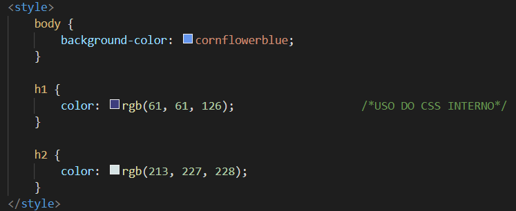

O CSS interno é o segundo modo de se criar folhas de estilo, também é criado no documento HTML, mas de forma organizada, isso porque o mesmo é feito dentro da tag style declarada na área head do documento, com isso, o documento HTML fica muito mais organizado, tornando fácil a tarefa de distinguir o que é conteúdo e o que é estilo, no entanto, quando se tem muitos estilos a serem declarados o documento HTML fica muito extenso o que é incomodo, e essa é uma das desvantagens desse método, por isso, só é recomendado para estilos pequenos e restritos a apenas uma página do site. Veja dois exemplos de código utilizando CSS interno, a primeira imagem é o CSS da página index, enquanto a segunda imagem é o CSS interno dessa página (colocando cor em todos os parágrafos da página com uma declaração somente, esta é outra vantagem do CSS interno em relação ao inline):
obs: tais trechos de código foram inseridos nas áreaa head logo abaixo do title.